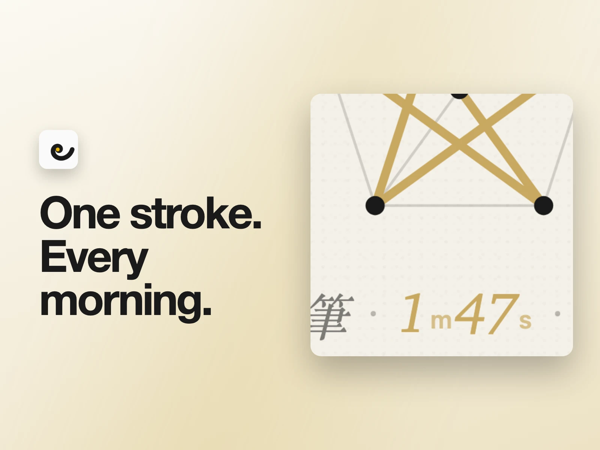
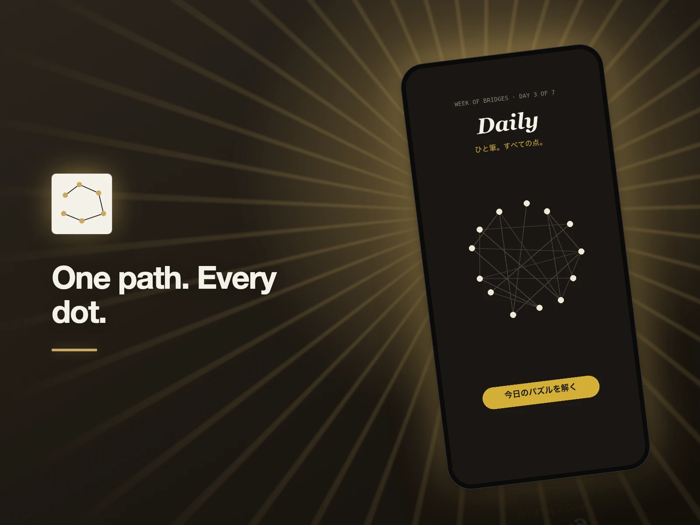
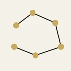
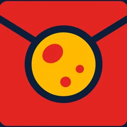
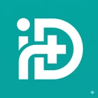
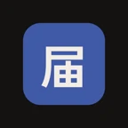

PurityLens
成分をひと目で拍下化妝品標籤，查看成分與每項判定的依據。
iOS
看完整說明 →成分表是寫給主管機關看的，不是寫給你看的；上網查同一個成分，你會得到五種互相矛盾的說法。PurityLens 讀完標籤，告訴你這罐對你的膚況而言站在什麼位置。少有人做的是把依據攤開：這個判定有幾成來自 TFDA、CosIng、CIR、PubChem，幾成來自 AI。我們沒把握的時候，你看得出來我們沒把握。

東京・獨立產品工作室
Creative × Realize — 把點子做成真正有人使用的產品。
Creative × Realize. 把值得做的點子，變成實用的產品。 從研究、設計、開發到上線，之後持續改進。












從點子到上線，每一步都清楚。
讓我們看看
你做過的作品。
我們是以東京為據點的小型遠端團隊，重視清楚溝通、紮實的設計與工程，以及真正被使用的成果。如果想加入我們，請選一個你最有信心的專案，告訴我們你負責了什麼。